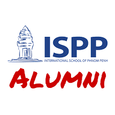

──── My Journey ────
Moscrop Secondary School
President of the SUA, since 2019
Vancouver, Canada
Received Principle's List Award During G12
Challenging myself by taking various AP courses, such as AP Microeconomics, AP Macroeconomic, AP Physics 1 and AP Chinese.
Graduated with best 6 subjects average of 94.6%
Founded Student United Association, focusing on promoting friendship between international and local students and cross-cultural communication, increasing school-to-school connections. Recruited 17 members and initiated the first "New Year Party" at Moscrop large gym, inviting over 100 students and raised $1500.
Joined Moscrop Student Government in 2020 as External Relations Rep. Responsible for sponsorship and planning school-wide events, including the Winter Formal, Townhall, Games night, etc.
Participated in Ronald McDonald House BC & Yucon high school volunteer program. Initiated "Walk for Live" fundraiser, raising for children from disadvantaged families, who are hospitalized in Vancouver.

International School of Phnom Penh
IB MYP degree, 2019
Phnom Penh, Cambodia
Courses taken: English, Chinese, Digital Design, Music, Mathematics, Individual & Society
Personal Project: Teach local children and schoolmates my own choreography, passed on the culture and spirit of dance, feel the power and happiness brought by it, and finally performed in the final assembly of the school.
Participated in MARISA swimming team
Specialized in freestyle and breaststroke; Attended regular training(2-3 times a week); won the first prize in the ISSAPP competition.
Participated in MARISA volleyball team
Attended weekly practices(3 times a week); won the first prize in the ISSAPP competition.